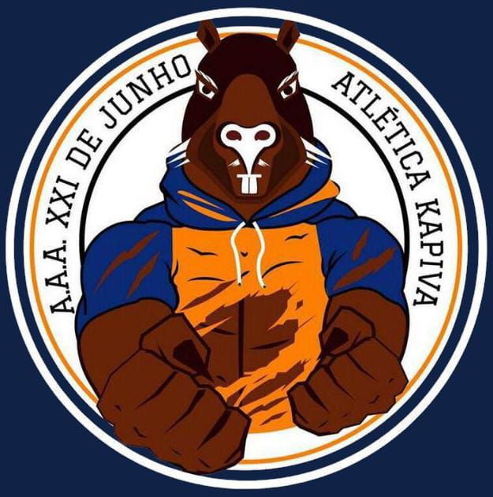

Fundada em 21 de Junho de 2017 com o nome "A.A.A XXI DE JUNHO - ATLÉTICA KAPIVA" e a Capivara como mascote, a Atletica Kapiva era uma Atletica geral do Centro Universitário Senac, suas cores são laranja, preto e azul. Participou do seu primeiro jogo universitário no ano de 2019 este conhecido como JUA.
Atualmente sendo apenas a atlética da
Unidade Santo Amaro e
mantendo sue mascote capivara, a Atlética Kapiva é uma organização estudantil,
feita de aluno para aluno, responsável por promover as ações no campus do
Centro Universitário Senac, de modo a proporcionar a melhor experiência
acadêmica para os alunos.
A Kapiva foi fundada com o visual:

Essa versão durou da fundação (21/06/2017) até o dia 03 de Setembro de 2018,
quando a atlética passou por uma renovaçãoe aproveitou seu
post de numero 100, para divulgar a nova e também atual logo.
Para mais informções entrar em contato via instagram: Atlética Kapiva.